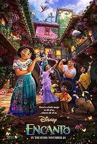
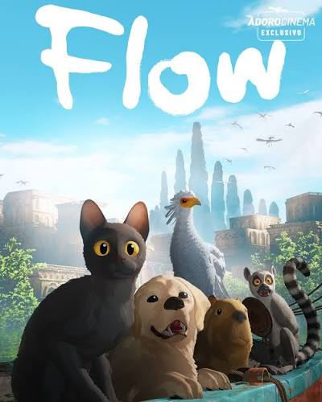
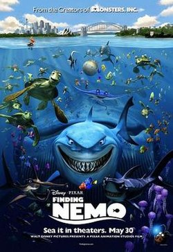
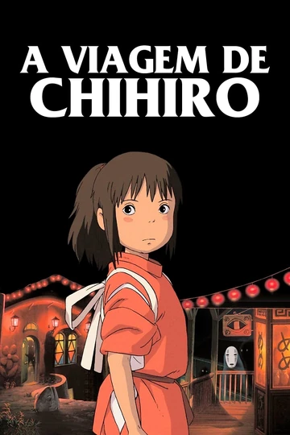

Não é novidade para ninguém que um Oscar se dá para o melhor filme ou animação de um determinado ano,
como por exemplo "Shrek" ou "Procurando Nemo", duas animações que marcaram a infância de diversas pessoas.
Mas a categoria de Melhor Longa-Metragem de Animação vai muito além da nostalgia. Criada oficialmente em 2002,
ela transformou a forma como o cinema enxerga essas produções.
Desde então, grandes estúdios duelam anualmente por essa estatueta dourada.
Abaixo, preparamos um guia rápido com os maiores marcos dessa categoria para você entender o peso dessa premiação.
Os Maiores Campeões da Categoria.
A disputa pelo topo do pódio tem um domínio claro, mas abre espaço para surpresas.
Históricas: "Pixar Animation Studios" : Líder indiscutível com 11 estatuetas conquistadas até hoje.
Walt Disney Animation: Segue de perto com vitórias marcantes como Frozen e Encanto.
Studio Ghibli: Fez história com A Viagem de Chihiro, o único filme em anime e de língua não-inglesa a vencer o prêmio principal.
O Top 3 que Marcou a História do Oscar: Se você quer maratonar o ápice da animação mundial, estes três vencedores são obrigatórios:
2002: Shrek O primeiríssimo vencedor, desbancando a própria Disney com muita sátira.
2003: A Viagem de Chihiro. Quebrou barreiras culturais e consolidou o mestre Hayao Miyazaki no Ocidente.
2019: Homem-Aranha: No Aranhaverso. Revolucionou a estética visual do cinema misturando 3D com técnicas de quadrinhos.
Como Funciona a Votação?
A escolha do vencedor passa por um processo rigoroso dividido em duas etapas simples:
Indicação: Membros do ramo de animação da Academia assistem e votam nos seus favoritos.
Vencedor: Todos os membros votantes da Academia elegem o grande campeão entre os finalistas.
As animações deixaram de ser "coisa de criança" e se tornaram verdadeiras obras-primas da narrativa e da tecnologia visual.
Cada edição do prêmio reflete a evolução dessa arte que continua a encantar gerações inteiras.

Orçamento estimado: Entre US$ 120 milhões e US$ 150 milhões.
Bilheteria mundial: Arrecadou cerca de US$ 256,8 milhões nos cinemas, enfrentando
o período de retomada pós-pandemia, mas
tornou-se um fenômeno absoluto de audiência ao entrar no catálogo do Disney+.
Direção: Jared Bush e Byron Howard.
Codireção e Roteiro: Charise Castro Smith.
Trilha Sonora Instrumental: Composta por Germaine Franco (primeira mulher a
vencer o Annie Awards de melhor trilha em animação por este filme).
Canções Originais: Escritas por Lin-Manuel Miranda.

ficha técnica e os detalhes de produção do filme letão Flow (título original: Straume)
revelam como uma equipe enxuta usou inovação digital para criar uma obra premiada.
Abaixo estão todas as especificações técnicas detalhadas:
Título Original: Straume. Título no Brasil: Flow.
Ano de Lançamento: 2024.
Duração: 1 hora e 25 minutos.
Países de Origem: Letônia, França e Bélgica.
Gênero: Animação, Aventura, Fantasia, Distopia.
Classificação Indicativa: Livre (L).
PrincipalDiretor: Gints Zilbalodis.
Roteiristas: Gints Zilbalodis e Matīss Kaž.
Produtores: Matīss Kaža, Ron Dyens, Gregory Zalcman.
Compositores da Trilha Sonora: Gints Zilbalodis e Rihards Zaļupe.
Estúdios de Produção: Dream Well Studio (Letônia), Sacrebleu Productions (França), Take Five (Bélgica).

Título Original: Finding Nemo.
Gênero: Animação, Aventura, Comédia.
Ano de Lançamento: 2003.
Duração: Aprox. 100 a 104 minutos.
Origem: Estados Unidos.
Distribuição: Walt Disney Pictures.
Direção: Andrew Stanton.
Codireção: Lee Unkrich.
Roteiro: Andrew Stanton, Bob Peterson e David Reynolds.
Produção: Graham Walters.
Trilha Sonora Original: Thomas NewmanElenco de Vozez.
Premiações Principais: Vencedor do Oscar de Melhor Filme de Animação.
Orçamento Estimado: US$ 94 milhões.
Bilheteria na América do Norte (EUA e Canadá): US$ 380,8 milhões.
Total Global Acumulado: US$ 941,6 milhões (incluindo o relançamento em 3D em 2012).

Título Original: Sen to Chihiro no Kamikakushi (千と千尋の神隠し).
Estúdio: Studio Ghibli.
Distribuição: Toho.
Orçamento: ~ ¥ 1,9 a 2,0 bilhões de ienes.
Lançamento Original: 20 de julho de 2001 (Japão).
Duração: 125 minutos.
Técnica de Animação: Animação 2D tradicional, desenhada à mão.
Bilheteria Mundial: Mais de US$ 360 milhões.
Japão: Arrecadou cerca de ¥ 30,8 bilhões de ienes, superando Titanic
e tornando-se o filme de maior bilheteria da história do país.
Oscar 2003: Vencedor na categoria de Melhor Filme de Animação
(tornando-se o primeiro e único filme em língua estrangeira e
desenhado à mão a vencer a categoria).
Festival de Berlim: Vencedor do cobiçado Urso de Ouro em 2002.